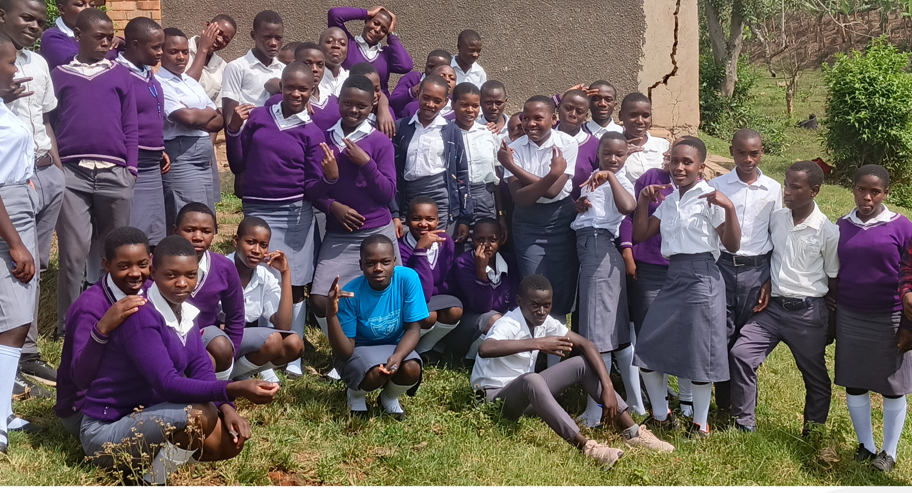

.png)
RWAMUCUCU SEED SECONDARY SCHOOL
P.O BOX 1146
KABALE-RUKIGA DISTRICT
| HOME | ACADEMICS | PROJECTS | SPORTS | ONLINE FORM |
Rwamucucu Seed Secondary School is welcoming new learners from Senior One to Senior Six ! We are excited to make enrollment easier than ever through our online application form.
Click APPLY NOW
Apply today and become part of our vibrant school family!
Learning extends far beyond textbooks. The Senior Two (S.2) class of Rwamucucu Seed Secondary School enjoying an educational and team-building field trip. Exposure to new environments is key to cultivating well-rounded, curious, and confident learners.

We are proud to share that our academic grading is now fully digital. Our dedicated teachers enter student marks directly into an automated report card system, which instantly generates accurate report card summaries. This modern system ensures data accuracy, saves valuable time for our educators, and provides the public and parents with transparent tracking of student performance. Thank you to our staff for driving innovation in our school!
Click to ENTER STUDENT SCORES
DOWNLOAD SCHOOL TEACHING TIME TABLE
⬇ DOWNLOAD TEACHING TIME TABLEClick the green button to download the school teaching timetable in PDF format.
Motto: EDUCATION IS WEALTH
.png)